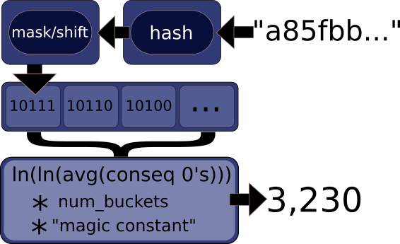
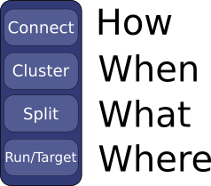
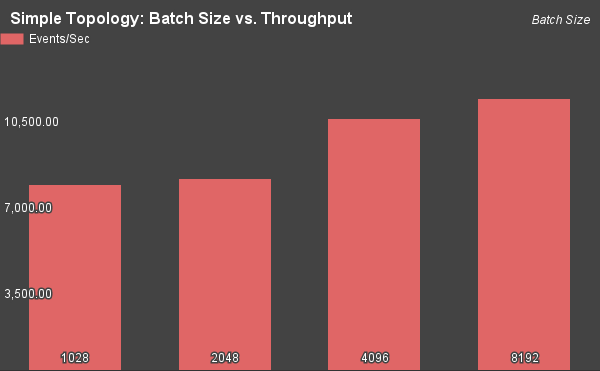

Data of Future Past
Postgres as Distributed Online Processing Analytics Engine

Setting
Data Engineering at Urban Airship, a mobile messaging company:
- Counting lots of things as fast as possible
- HBase to the rescue
- Home grown dimensional storage called datacube
Postgres as Distributed Online Processing Analytics Engine
- Problem Statement
- Distributed Postgres
- Probabalistic Datastructures
- Benchmarking Solutions, Unloaded/Loaded.
The Problem
- Data consistency
- New dimensions multiply writes
- Double counting
- Changing schema is hard
- Consistent backups?
Exploring Solutions
Postgres is pretty nice to work with.
Makes adhoc analytics simple.
Well known replication and backup story
Problems with Postgres
Not particularly good at scaling writes horizontally
Operationally complex
PLProxy
- Simple API
- Battle tested
- Flexible
- Easy upgrade paths, no lock-in
Approach
Two phase commit
Commutative, Idempotent data
Idempotent Writes with HyperLogLog
Postgres-hll extension
Commutative, idempotent
Fast, approximate, cardinality
Briefly, how Hyperloglog works
PLProxy: Setting up Foreign Data Wrappers in SQL.
Cluster Config
Partition defs, cluster version, connection config elided
Partition mapping is as follows:
Partition Mapping
CREATE FOREIGN DATA WRAPPER plproxy;
CREATE SERVER testcounts FOREIGN DATA WRAPPER plproxy
OPTIONS (connection_lifetime '1800',
p0 'dbname=part00 host=10.130.1.38',
p1 'dbname=part01 host=10.130.1.39' );
-- This mapping is accessible to all local users
CREATE USER MAPPING FOR PUBLIC SERVER testcounts;
Proxy Functions
CREATE OR REPLACE FUNCTION upsert_count(
in_id text, in_date date, in_hour smallint,
in_event_id text, in_category text
) RETURNS TABLE (updates int)
LANGUAGE plproxy
AS $$
CLUSTER 'testcounts';
RUN ON hashtext(in_event_id);
$$;
PL Syntax Explained

Experimental Design
Physical Layout
Three Dell R610s with:
- 2 8-core Xeon CPUs
- 6 SSDs in a RAID 10 configuration (~300GB usable)
- write-back cache enabled on the I/O controller
- 48GB of ECC RAM.
- Bonded Ethernet interfaces
Simple Topology
Setting up the Shards
Example table
CREATE TABLE test_counts
(
id CHAR(22),
date DATE,
hour SMALLINT,
event_ids hll,
category TEXT
);
Single Insert/Update
CREATE OR REPLACE FUNCTION upsert_test_count(...) RETURNS int
BEGIN
UPDATE test_counts set event_ids=hll_add(
event_ids, hll_hash_text(in_event_id))
WHERE ...
IF FOUND THEN RETURN 0; END IF;
BEGIN
INSERT INTO test_counts(event_ids, ...)
VALUES (hll_empty(), ...);
Update test_counts SET event_ids=hll_add(
event_ids, hll_hash_text(in_event_id))
WHERE ...
END;
RETURN 1;
END;
Argument types other than hll field elided
Single Write
select upsert_test_count(
'some-identifier-string'::text,
'2015-05-16'::date,
'22'::smallint,
'cabef32d-bc21-4a34-993d-3e7d606df9c6'::text,
'Catagory1'::text
);
Tuning
- Optimum index configuration (3/4 dimensions indexed)
- The fillfactor tells Postgres to pre-allocate 90% of the index space empty, copy data less.
- Standard best practices for workMem, and other memory settings
Still too slow
~2,000 events/sec
A transaction per tuple just won't work long-term
Batching
CREATE OR REPLACE FUNCTION upsert_test_count(
in_ids text[], in_dates date[], in_hours smallint[],
in_event_ids text[], in_cats text[]
) RETURNS TABLE (update int)
BEGIN
RETURN QUERY SELECT upsert_push_hll(
c.in_ids, c.in_date, c.in_hour, c.in_event_id, c.in_cats
) FROM unnest(
in_ids, in_dates, in_hours, in_event_ids, in_cats
) as c (in_id, in_date, in_hour, in_event_id, in_cats);
END;
$$;
Batch Write Query
select upsert_test_count(
'{aaaaaaaaaaaaaaaaaaaaaa, ..., ...}'::text[],
'{2015-05-15,2015-05-16,2015-05-16}'::date[],
'{20,21,23}'::smallint[],
'{cabef32d-bc21-4a34-993d-3e7d606df9b1, ..., ...}'::text[],
'{Category1,Catagory2,Category1}'::text[]
);
Anatomy of a PLProxy Transaction
When Things Go Wrong
Deadlock detected!
Deadlock Solutions
- Sort tuples before submitting them
- Single writer pattern
Our functions make sorting difficult, so single writer
Simple Topology
Peaks out with tuning, indexes, and batching at 11k events/sec
Next step is to increase parallelism
Benchmark Results
Simple Topology Throughput (200K)
Advanced Topology
Advanced Topology Throughput (2MM)
Direct Comparison (2MM)
Benchmarks on a Loaded Cluster
Types of Load
- Data load: number of rows, size on disk
- Concurrent requests
Setting up a loaded system
- 60G of test data
- 20G of indexes
- Added 20G more data, and 6G more indexes
Setting up concurrent requests
- Pre-generate insert query batches into .sql files
- Run 10 concurrently in a screen session
- Not 100% representative of real-world behavior
Loaded Results
Read Query (AdHoc)
SELECT id, date, hour, hll_cardinality(event_ids)
FROM dynamic_query(
'SELECT * from test_counts
WHERE date >= (now() - interval ''7 days'')
AND id = ''M2E0MDdlNzYtY2Y4NC00Nz'''
) AS (
id char(22),date date,hour smallint,event_ids hll, cat text)
ORDER BY
date desc,
hour desc
LIMIT 10;
Read Query Results
id | date | hour | hll_cardinality
------------------------+------------+------+-----------------
M2E0MDdlNzYtY2Y4NC00Nz | 2015-06-10 | 18 | 6
M2E0MDdlNzYtY2Y4NC00Nz | 2015-06-10 | 13 | 6
M2E0MDdlNzYtY2Y4NC00Nz | 2015-06-10 | 13 | 6
M2E0MDdlNzYtY2Y4NC00Nz | 2015-06-10 | 6 | 6
M2E0MDdlNzYtY2Y4NC00Nz | 2015-06-10 | 21 | 5
Wrap Up: Postgres for Distributed OLAP
- Postgres can scale horizontally.
- Write throughput ~= Hbase system.
- New features are a few lines of SQL
- We retain queryability and DDLs
- Operational concerns only get worse :(
Remaining Work
Future Features
- Cross table joins
- Automated failovers(shards)
- Automated, efficient backups
- Tools to help migrate data, add partitions
- Integrating PGBouncer
Work is Ongoing
Ansible automation for setting up a test cluster